Создание игр в Roblox Studio
Программирование на Lua. Программирование интерфейсов. Взаимодействие клиента и сервера
Введение
В этом занятии мы продолжим работу с интерфейсом и познакомимся с более сложными темами в программировании, а именно - с программированием интерфейсов и взаимодействием клиента и сервера.
В конце занятия мы завершим игру, для которой создавался этот интерфейс, и у нас будет возможность поиграть в командный шутер. Для этого нужно будет последовательно добавить всех людей к проекту, как это делалось в 12 занятии данного курса (командная работа над ландшафтом).
Настройка точек спауна
Прежде чем приступать к работе с интерфейсом, необходимо немного подготовить карту. Найдите точки спауна каждой команды и переименуйте их. Для синей команды введите название BlueSpawn, для красной - RedSpawn.
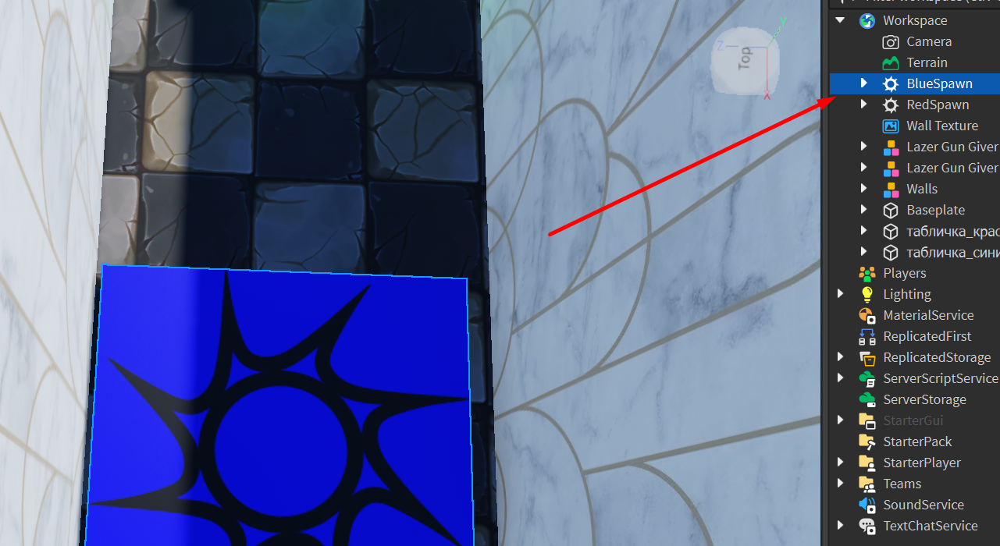Благодаря этому разделению, мы сможем обращаться в программном коде к каждой из них отдельно и переносить игроков на базы своих команд. Чтобы было удобно это сделать, скройте интерфейс, нажав на иконку глаза во вкладке View.
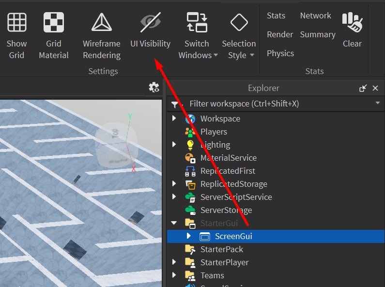Добавление команд. Сервис Teams
После этого необходимо сформировать сами команды. Для этого найдите сервис Teams в окне Explorer и добавьте два дочерних объекта Team. Это специальные объекты, которые можно создавать только в разделе Teams.
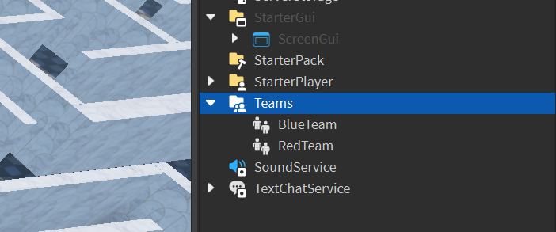Настроим команды, чтобы они отличались между собой. Разделение на команды происходит благодаря цвету команд.
Переименуем первую команду в BlueTeam, а вторую - в RedTeam. После этого выберем каждую команду и в окне Properties установим соответствующий ей цвет в параметре TeamColor.
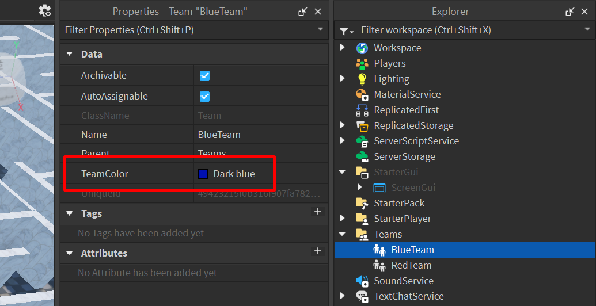Локальная и серверная стороны игры
Для корректной работы скриптов кнопок нам необходимо использовать не базовые скрипты, которые мы использовали ранее, а их локальную версию - LocalScript. Это специальный вид скриптов, работающих непосредственно на компьютере игрока.
С точки зрения взаимодействия игроков, игры делятся на два вида - мультиплеерные и синглплеерные. Различие заключается в том, что в мультиплеерных играх в одной игровой сессии одновременно находится несколько игроков, в то время как в синглплеерных у каждого игрока создается своя собственная игра.
Говоря проще, в синглплеерных играх у каждого игрока существует свой собственный мир с внутриигровым персонажами, событиями, противниками, взаимодействовать с которыми может только он. Любой другой игрок также находится в своем собственном мира и не может ни увидеть первого, ни внести какие-либо изменения в его мир. Если он убьет босса в своей игре, у другого игрока этот босс останется на месте.
В случае с мультиплеерными играми все игроки находятся в одном мире и любое изменение этого мира, производимое одним игроком, будет влиять на игровой мир всех остальных. Если в мультиплеере убить босса, он будет тут же убит и для других игроков.
Сложность работы с мультиплеерными играми заключается в том, что помимо общих действий, совершаемых игроками (сражение с монстрами, сбор ресурсов, передвижения по карте), каждый из них также совершает действия, не влияющие на чужой игровой процесс. Например, если один игрок открывает окно инвентаря, оно должно показаться только ему и не должно открывать инвентарь у всех игроков на сервере. Если игрок применяет зелье лечения и восстанавливает свое здоровье, оно должно восстановиться только у него, а не у всех существ в игре.
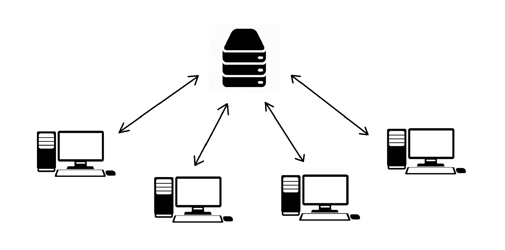Такие действия называются локальными и с точки зрения структуры игры они должны производиться на компьютере игрока, после чего информация о внесённых изменениях передается и записывается на сервер.
Программирование интерфейса
Создание локального скрипта кнопки
Перейдём к программированию кнопок. Создадим дочерний локальной скрипт для синей кнопки:
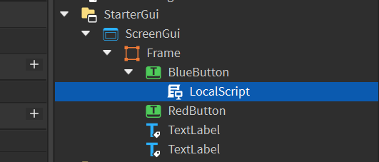В этом скрипте пока что необходимо написать только базовую часть, а именно - обработчик события, вызываемого нажатием кнопки при помощи события MouseButton1Click.
Чтобы сэкономить время и место в коде, используем более быстрый способ написания функции, вызываемой событием. Создадим функцию непосредственного в момент написания события. Этот способ не требует создания и вызова функции вне события, создавая безымянную функцию, работающую только внутри вызвавшего её события.
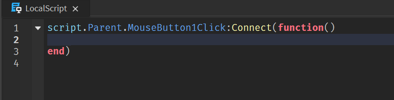Локальный скрипт кнопки должен запустить действия, вносящие изменения на сервер и затрагивающие всех игроков.
Выбрав команду и нажав на кнопку, игрок сообщит всей игре, что теперь он в красной или синей команде. То есть, нажав на локальную (на своем компьютере) кнопку, он совершит действие, вносящее изменения в общий игровой процесс.
Создание удаленного события. Remote Event
Для таких случаев используются удаленные события. Это специальные события, которые можно вызвать с локальной стороны, после чего они могут запустить какие-то действия на стороне сервера.
В окне Explorer найдём сервис ReplicatedStorage и создадим в нём дочерний объект Remote Event. Для удобства и читаемости кода, переименуйте его в TeamChangeEvent.
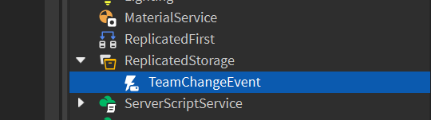Создание серверного скрипта
Добавим код, который выполняется на стороне сервера и запускается удаленным событием. Перейдите в ServerScriptService и создайте обычный скрипт. Переименуйте его в TeamChangeScript:
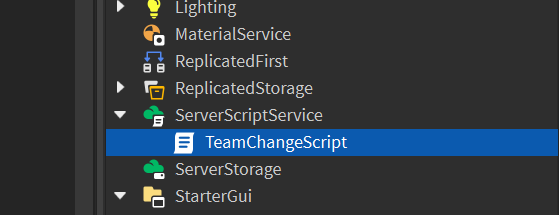После того, как игрок нажмёт на кнопку и вызовет событие со стороны клиента, изменения должны произойти на стороне сервера, и именно этот скрипт должен перенести игрока в выбранную команду.
Откроем скрипт и создадим ссылку на сервис Teams:
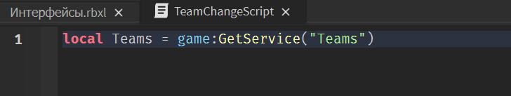Метод GetService позволяет получить доступ к другому сервису внутриигровой структуры. Теперь переменная Teams - это быстрая ссылка на одноименный сервис, благодаря которой мы сможем получить доступ к командам.
Добавим реакцию на срабатывание события TeamChangeEvent. Когда игрок нажмёт на кнопку и запустит удалённое событие, серверный скрипт увидит, что оно было вызвано и выполнит указанные команды:
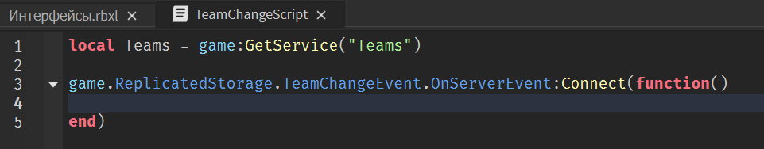Обратите внимание, что в параметрах функции, вызывающейся обработчиком события, мы укажем два параметра - Player и Team (см.рисунок ниже). Эти данные будут передаваться позже в локальном скрипте кнопки. Именно благодаря им сервер будет понимать, какого игрока определить в какую команду.
Следующим шагом необходимо определить цвет команды, в которую должен перейти игрок. В параметре Team передается название команды. Чтобы получить цвет команды, нам нужно найти её в сервисе Teams и прочесть значение ее параметра TeamColor.
Для этого воспользуемся уже знакомым методом FindFirstChild. После обращения к искомой команде добавим точку, чтобы обратиться к нужному параметру - TeamColor. Теперь в переменной TeamColor будет записан цвет целевой команды.
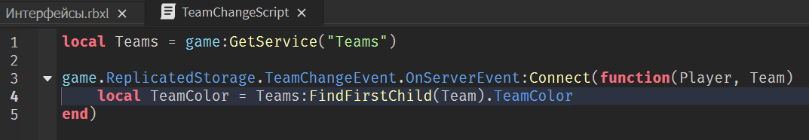Переопределим цвет команды игрока, переданного в параметре Player. Если в игре есть команды, у каждого игрока активируется собственный параметр Team Color. Запишем, что новый цвет команды выбранного игрока будет цветом, полученным в предыдущей строке:
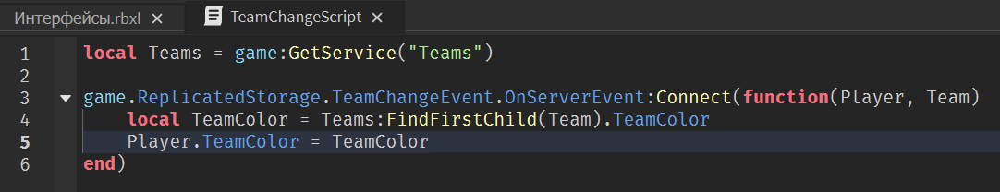Серверный скрипт готов!
Завершение скрипта для кнопки
Вернемся к локальному скрипту, созданному для кнопки.
Чтобы завершить базовую логику разделения на команды, необходимо внести всего одну строку с вызовом удалённого события и передачей в него двух уже упомянутых параметров.
Для этого обратитесь к удаленному событию и вызовите метод FireServer. Он запускает событие и передает указанные в скобках данные на север:
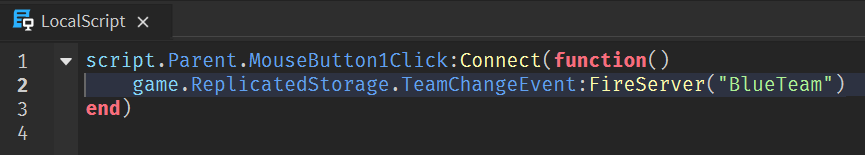В скобках указывается только один параметр - имя выбранной команды. Ссылка на игрока, нажавшего на кнопку, автоматически добавляется в данные, передающиеся на сервер, и записывается в скрытый первый параметр Player.
Скопируем получившийся скрипт и вставим его во вторую кнопку. Заменим в нем название команды и запустим игру, чтобы проверить, работает ли созданная система.
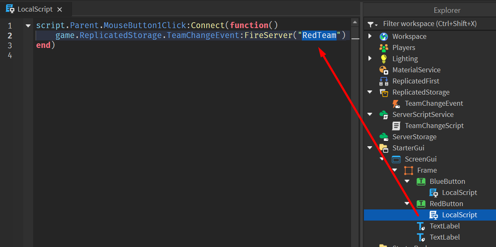Допишем код, закрывающий окно после выбора команды. Добавьте следующую строку в локальные скрипты кнопок:
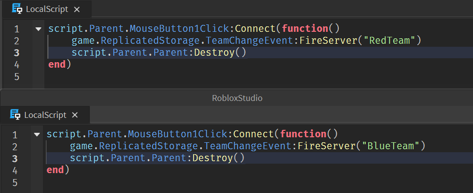Теперь после запуска игроком события уничтожится Frame, на котором созданы все элементы интерфейса и окно будет автоматически закрыто.
Перенос игрока на базу команды
Последнее, что осталось изменить - телепортация игрока на базу своей команды. Это действие будет выполняться на стороне клиента, поэтому также внесём изменения в локальный скрипт кнопки. Кнопка первой команды перенесёт игрока на базу синей команды, кнопка второй - на базу красной.
Добавьте дополнительные строки перед обработчиком события и введите две переменные - player и spawnpoint. Так как скрипт выполняется на стороне клиента, мы можем получить ссылку на игрока через сервис Players, обратившись к объекту LocalPlayer. Для каждого игрока это будет ссылка непосредственно на него.
В переменную spawnpoint запишите точку спауна команды, для которой создана эта кнопка.
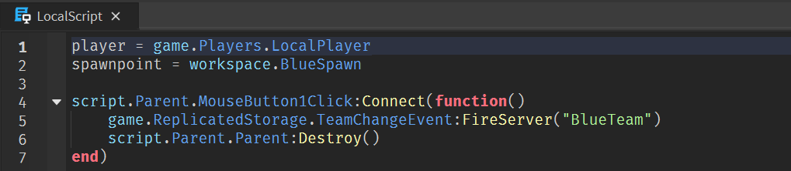Перед тем как уничтожить весь интерфейс, включая этот скрипт, нужно успеть перенести игрока на его новую базу.
Логика этого действия будет схожа с логикой телепортации, пройдённой в позапрошлом занятии. Для корректной работы будет использоваться не параметр Position, а параметр CFrame, более сложная и точная система для работы с трансформацией объектов. Добавьте дополнительную строку перед уничтожением интерфейса:
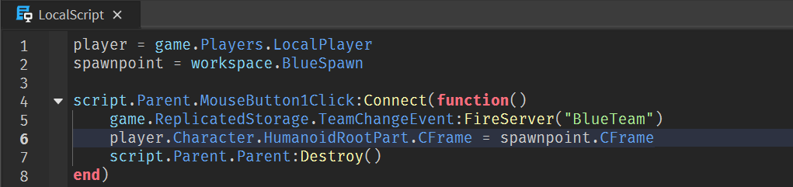Добавим эти изменения во второй скрипт, запустим игру и проверим, всё ли работает.

Добавим оружие, которое будет выдаваться игрокам в начале игры при помощи ToolBox.
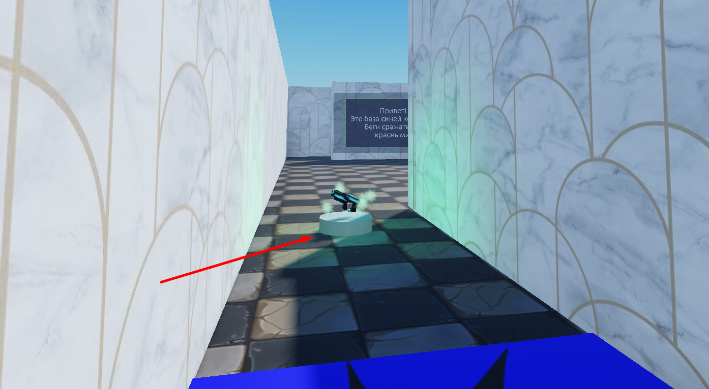Теперь можно поиграть в получившуюся игру. Нужно перезапустить Roblox Studio, чтобы найти её. После этого она появится в разделе Home, нужно войти в данную игру, нажав на кнопку TeamTest (так можно будет играть всем вместе на одной карте, если вас добавили в игру с другими людьми).
Домашкаа 😁
Это завершающее занятие пятого модуля, поэтому в качестве домашнего задания предстоит пройти тест на знания, полученные за последние 4 занятия.
-
Что такое событие?
- Особый период в игре с призами и активностями (Хэллоуин, Новый год ит.д.)
- Действие игрока, изменяяющее что-либо в игре
- Любое действие, изменяяющее что-либо в игре
-
Для чего используются события?
- Чтобы создавать реакцию игры на действия игроков
- Чтобы отслеживать стратегии поведения игроков
- Чтобы создавать сюжетные сцены
-
Что из перечисленного НЕ является событием?
- Смерть игрока
- Касание игроком объекта
- Изменение значения глобальной переменной
- Всё вышеперечисленное - события
-
Что нужно добавить в программу для отслеживания события?
- Функцию
- Обработчик события
- Обработчик события, который будет вызывать функцию
-
Как правильно отследить касание объекта игроком?
- player.Touched(part):Connect(onTouch)
- part.Touched.Connect(onTouch)
- part.Touched(onTouch)
- part.Touched:Connect(onTouch)
-
Для чего нужна функцияя debounce?
- Чтобы отключить отскок объекта при падении
- Чтобы исключить ложные срабатывания события
- Чтобы оттолкнуть игрока при касании
-
Что такое коллайдер?
- Прозрачный объект, ослеживающий вход и выход игрока в область карты
- Объект, блокирующий перемещение игрока в заданной области
- Ускоритель микрочастиц, созданный для изучения квантовых процессов
-
Что НЕ включает в себя внутриигровой интерфейс?
- Графическая информация - уровень здоровья, количество патронов и т.д.
- Элементы управления - кнопки, переключатели, поля ввода
- Инструменты работы с объектами и изменения их параметров
- Всё вышеперечисленное входит во внутриигровой интерфейс
-
Зачем нужны специальные объекты SurfaceGui и ScreenGui?
- SurfaceGui размещает элементы интерфейса на экране, а ScreenGui - на объектах
- SurfaceGui размещает элементы интерфейса на объектах, а ScreenGui - на экране
-
Чем отличаеются локальные и серверные скрипты?
- Действия локальных скриптов видны только на компьютере игрока, а серверных - на всех компьютерах, подключённых к игре
- Локальные скрипты работают в отдельном городе, в то время как серверные - во всём мире
- Локальные скрипты запускает человек, а серверные запускаются автоматически